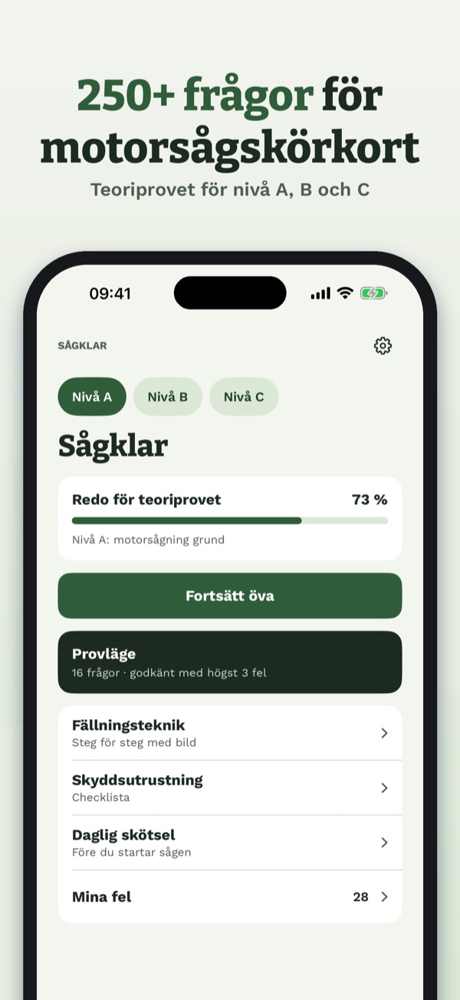
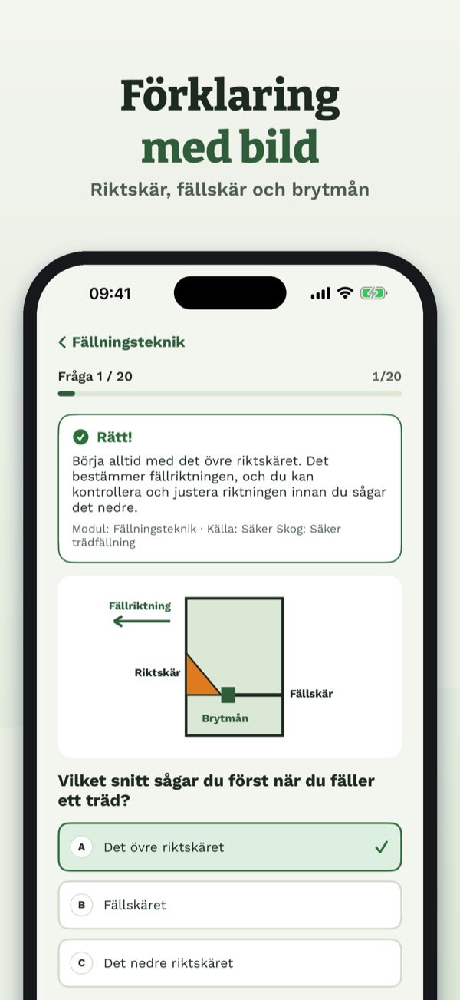
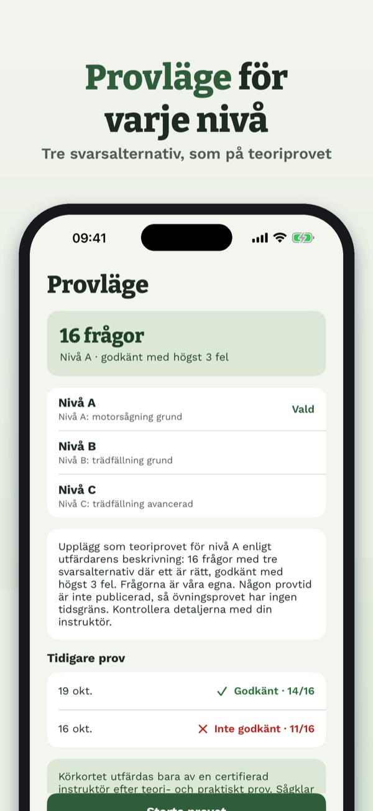
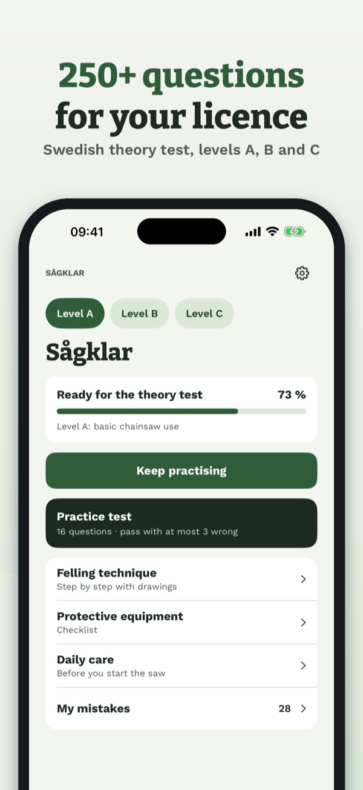
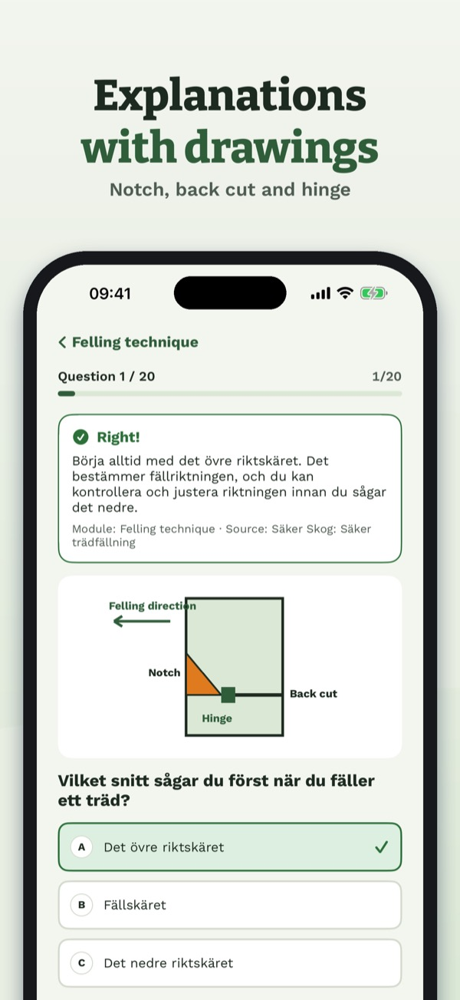
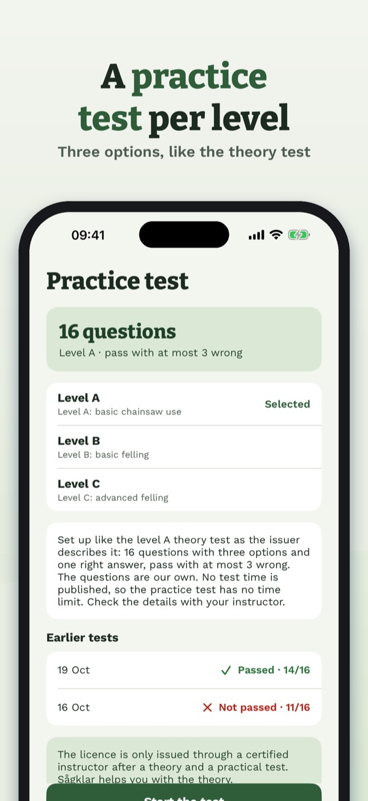

Sågklar – motorsågskörkort
Teoriprov nivå A, B och C
Hämta i App Store



Sågklar hjälper dig att plugga inför teoriprovet för motorsågskörkort, nivå A, B och C.
- Över 250 egna frågor med tre svarsalternativ, som på teoriprovet.
- Välj nivå: A (underhåll och kapning), B (fällning av normala träd), C (svårare fällning och stormfällt).
- Öva per modul: skyddsutrustning, sågens säkerhetsdetaljer, kedja och svärd, kapning, fällningsteknik, fällredskap, fastfällda och stormfällda träd, stammar i spänn, första hjälpen och regler (AFS 2023:11).
- Förklaring och källa till varje fråga, egna bilder på riktskär, fällskär, brytmån, kastsektor och spänningar.
- Provläge per nivå med resultat per modul och dina fel att öva på.
- Fällningsteknik steg för steg med bilder.
- Checklista för skyddsutrustning: byxa, hjälm, visir, hörselskydd, kängor och handskar.
- Daglig skötsel: kedjebroms, kedjefångare, gasreglagespärr och kedjeskärpa.
- Ordlista med de viktigaste begreppen.
- Fungerar utan nätverk, inget konto.
Modulen om skyddsutrustning (20 frågor), checklistan för skyddsutrustning och ordlistan kan användas utan köp. Ett engångsköp låser upp alla frågor och övningsprov. Ingen prenumeration.
Motorsågskörkortet utfärdas bara av en certifierad instruktör efter teori- och praktiskt prov. Sågklar är en fristående övningsapp, inte kopplad till Skogforsk eller Skogsstyrelsen, och ersätter inte kursen. Text och bilder är våra egna.
Terms of Use (EULA): https://www.apple.com/legal/internet-services/itunes/dev/stdeula/
Privacy: https://baytechbv.github.io/privacy/motorsagskorkort-se/
Sågklar – motorsågskörkort
Swedish chainsaw licence test
Download on the App Store



Sågklar helps you prepare for the theory test of the Swedish chainsaw licence (motorsågskörkort), levels A, B and C. The questions are in Swedish, like the test.
- Over 250 questions of our own with three options, like the theory test.
- Pick a level: A (maintenance and cross-cutting), B (felling normal trees), C (difficult felling and storm-damaged trees).
- Practise by module: protective equipment, the saw's safety devices, chain and bar, cross-cutting, felling technique, felling aids, hung-up and storm-felled trees, stems under tension, first aid and rules (AFS 2023:11).
- An explanation and a source for every question, with our own drawings of the notch, back cut, hinge, kickback zone and tension.
- Mock test per level with a result per module.
- Felling technique step by step with drawings.
- Protective equipment and daily care checklists.
- Glossary of the key terms.
- Works offline, no account.
The protective equipment module (20 questions), the equipment checklist and the glossary can be used without a purchase. A one-time purchase unlocks all questions and mock tests. No subscription.
The licence is only issued by a certified instructor after a theory and a practical test. Sågklar is an independent practice app, not affiliated with Skogforsk or Skogsstyrelsen, and does not replace the course. Text and drawings are our own.
Terms of Use (EULA): https://www.apple.com/legal/internet-services/itunes/dev/stdeula/
Privacy: https://baytechbv.github.io/privacy/motorsagskorkort-se/